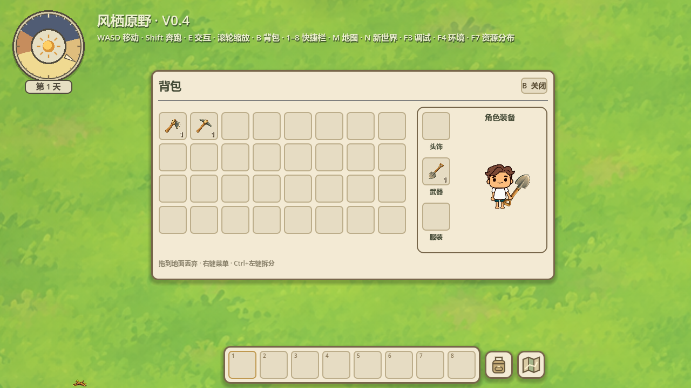

2026-10-17 · 预览独立使用原生front_breathe待机，不再跟随场景左右/背面、镜像或交互动作，装备和卸下实时更新。场景人物、移动和原四方向动画保持。
Godot4.7.2 Stable / Compatibility / RTX5060，80项专项通过，覆盖3工具×4场景方向、真实向左移动、世界拾取、卸下与重新打开背包。没有新美术或存档变更，没有无关全量回归或新增性能数据。

场景人物已向左移动，装备区仍显示正面持铲。
专项检查数据